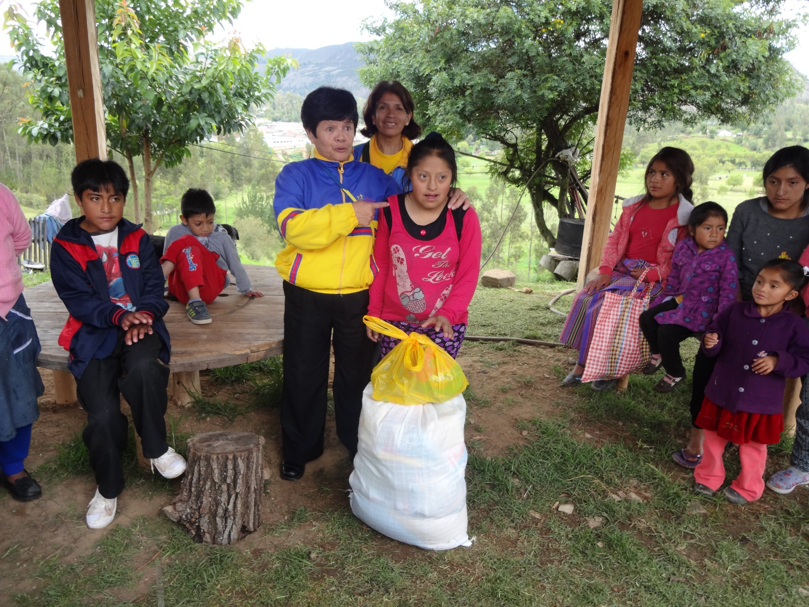
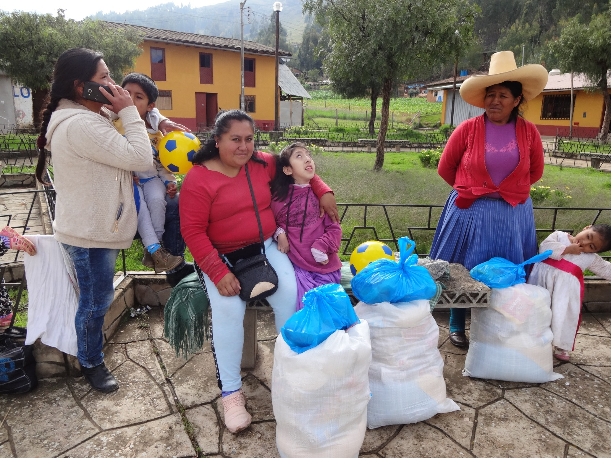
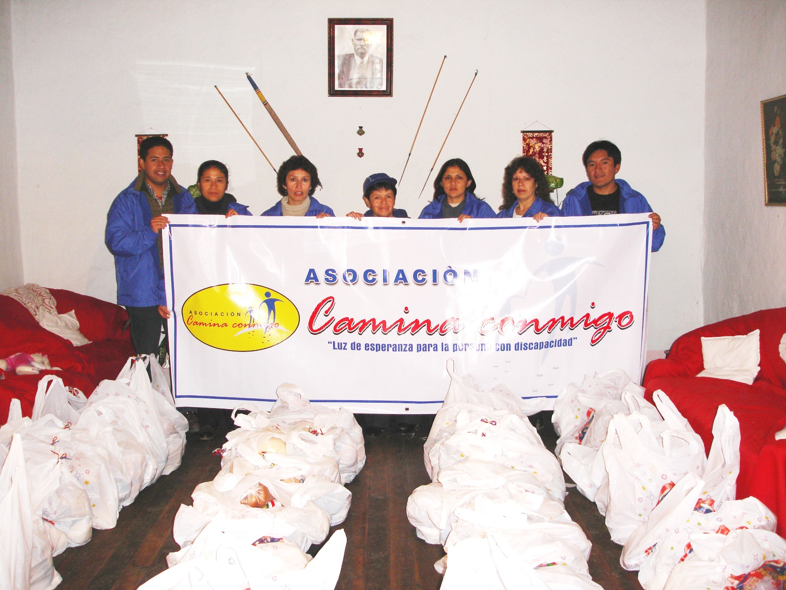
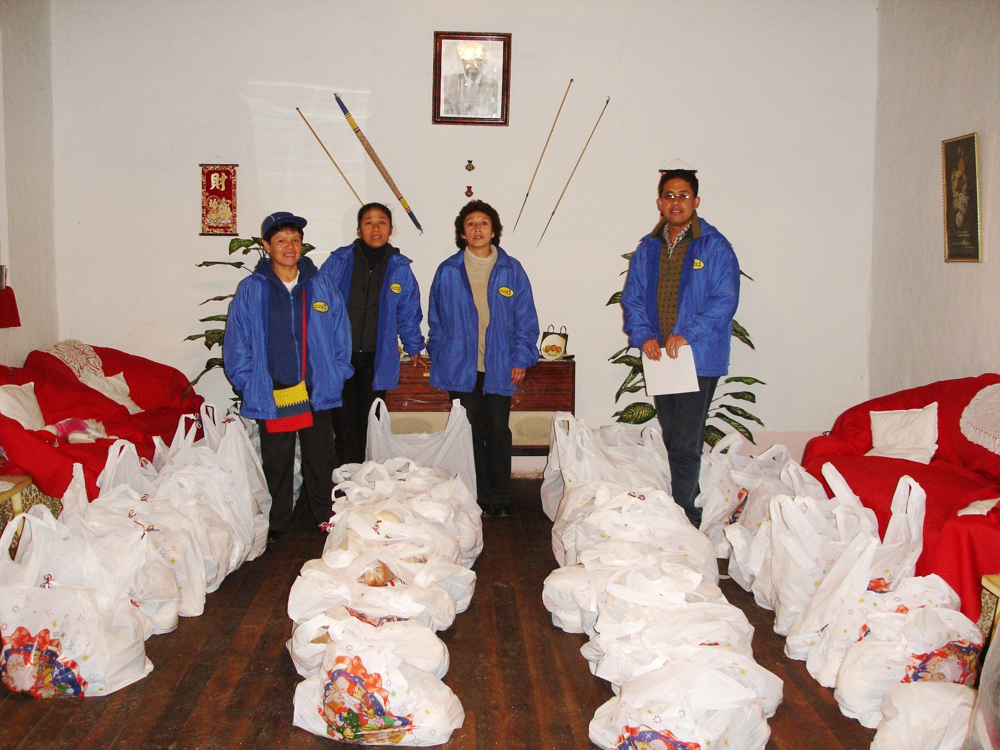
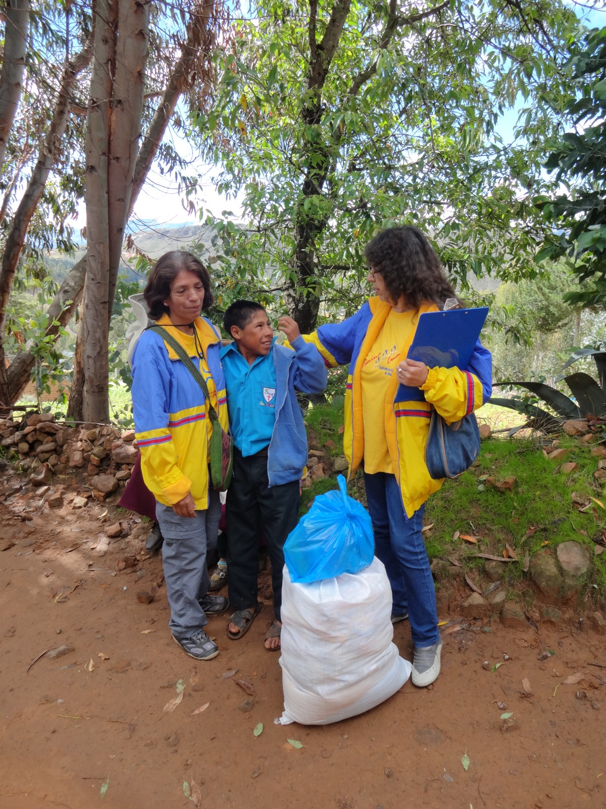
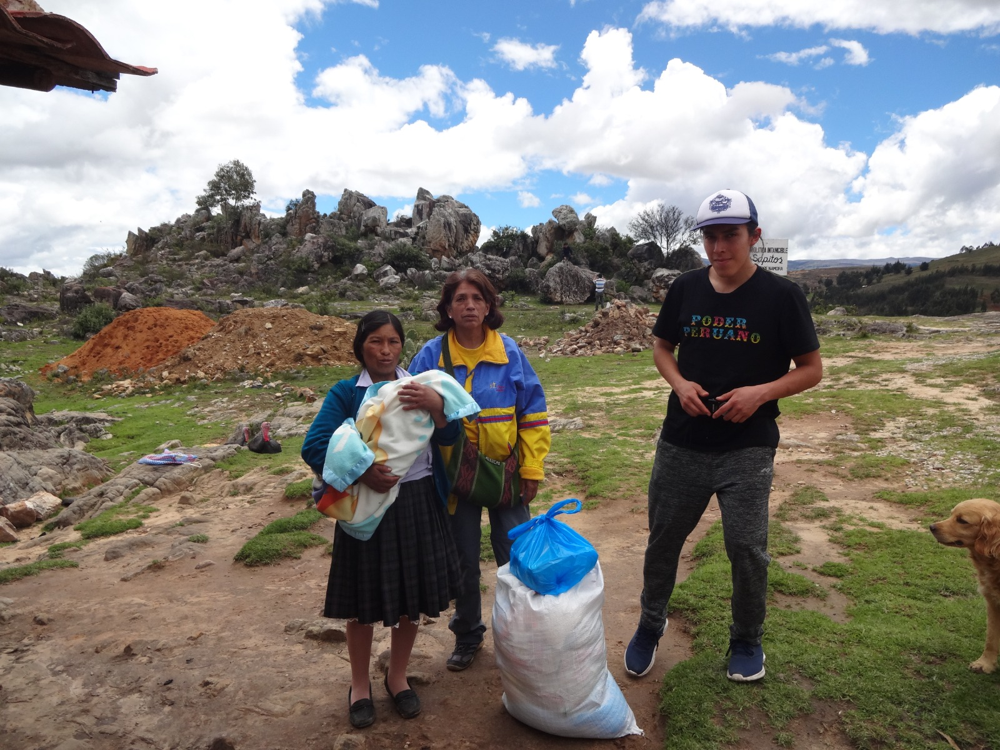

CONOCE NUESTRA HISTORIA

Así nació Camina Conmigo
Un recorrido visual por nuestros orígenes y el propósito que nos impulsa cada día.
Luz de esperanza para la persona con discapacidad
Acompañamos a niños, jóvenes y familias de las zonas rurales de Cajamarca, promoviendo inclusión, solidaridad y oportunidades.
19 de diciembre
Estamos preparando una nueva salida navideña y necesitamos apoyo para hacerla posible.
Para cualquier donación monetaria, comunícate directamente con la Srta. Gladis Abanto.
Srta. Gladis Abanto
+51 976 003 882
Buscamos una Sprinter o Combi con capacidad aproximada para 15 personas para la salida navideña del 19 de diciembre.
PUEDO APOYAR CON MOVILIDADUn recorrido visual por nuestros orígenes y el propósito que nos impulsa cada día.

Acompañamiento
Integral y humano
Trabajamos junto a niños, jóvenes y familias de las zonas rurales de Cajamarca, reconociendo sus necesidades y fortaleciendo sus capacidades.
Nuestro acompañamiento busca crear vínculos duraderos y abrir caminos hacia una inclusión real en la comunidad.
La imagen representa a una persona que se apoya junto a un niño. Ambos presentan una condición que les impide caminar de manera independiente y requieren apoyo mutuo para seguir adelante.
"Caminar juntos nos ayuda a seguir adelante."Conoce el origen del logo
La historia de Camina Conmigo está construida con personas, proyectos, colaboraciones y momentos que fueron haciendo realidad una visión compartida.
El momento en que un grupo de personas decidió formalizar un compromiso de ayuda y acompañamiento, trazando las primeras líneas de lo que hoy es nuestra institución.
.jpeg)
.jpeg)
Un espacio que permitió comenzar a imaginar un proyecto más grande.
La generosidad de aliados clave nos otorgó el espacio físico fundamental para proyectar un centro de atención a largo plazo.

.jpeg)
.jpeg)
.jpeg)
Una iniciativa que representa uno de los pasos más importantes en la trayectoria de Camina Conmigo, proyectando un futuro de atención especializada.
.jpeg)
Presentación del proyecto
.jpeg)
Entrega del proyecto por UPN
.jpeg)
Señalización del terreno donado

Ver Brochure Completo
Entrega del Proyecto Hogar Clínica por parte de la Directiva de la Universidad Privada del Norte (UPN).
Con el fundamental apoyo de UNIMAQ S.A. se logró cercar el terreno donado, marcando físicamente el espacio de nuestro futuro.
.jpeg)
.jpeg)
.jpeg)

Se logró culminar el cerco perimétrico del terreno, asegurando el perímetro para las futuras fases de construcción.
Campañas, encuentros y actividades que forman parte viva de la historia de Camina Conmigo.


Con el personal del Centro Comercial El Quinde
Tu empresa también puede sumarse

Escucha a las familias, voluntarios y personas que han caminado con nosotros. Historias reales que le dan sentido a cada esfuerzo.

Cada persona, empresa e institución que se suma hace posible que este camino continúe.
QUIERO SUMARMEUna historia construida con personas, proyectos, encuentros y momentos que merecen ser recordados. Explora nuestras 100 fotografías originales.
La solidaridad no tiene fronteras. Ahora puedes contribuir a nuestra causa de manera rápida y segura desde el extranjero a través de PayPal. Cada aporte nos permite seguir llevando luz y oportunidades a más familias en Cajamarca.

Tú también puedes formar parte de ella.
.jpeg)